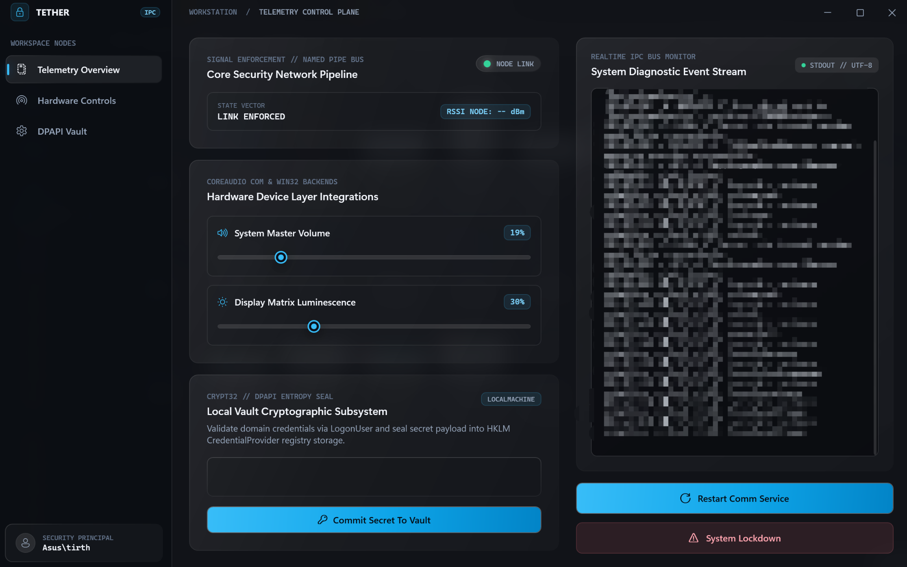
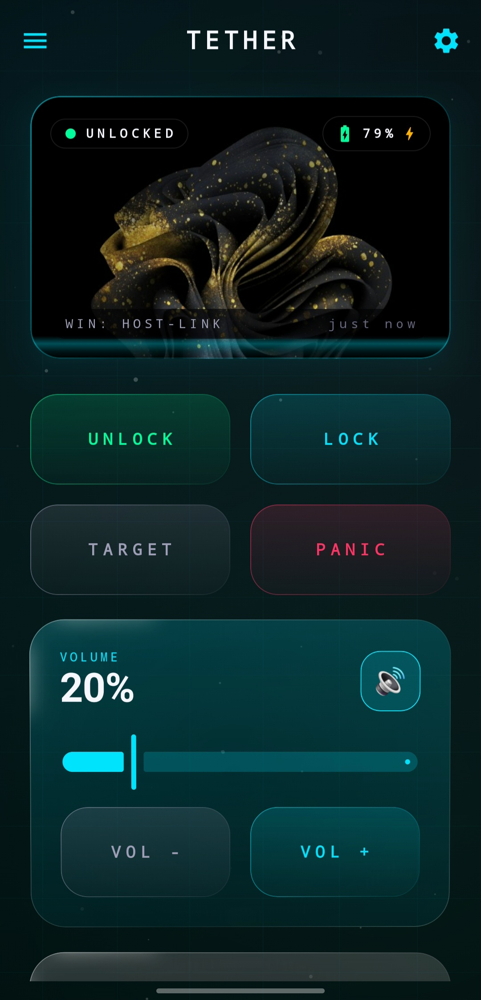
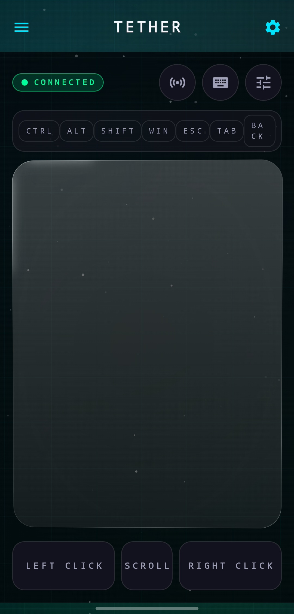
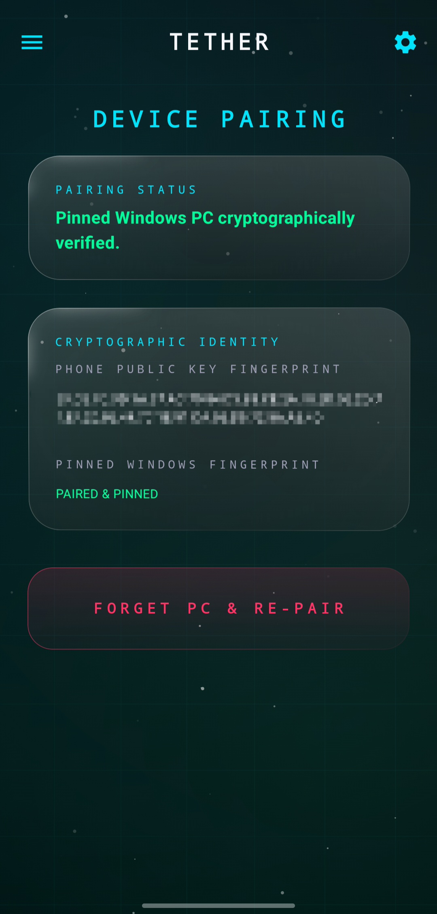

Local-First Android to Windows Bridge
Connect Android to Windows over Local Wi-Fi. Zero Cloud.
Tether is a free, open-source personal trust and authentication platform connecting an Android phone to a Windows PC over your local network. Unlock Windows via biometric challenge, use your phone as a wireless trackpad, send files, execute emergency lockdowns, and adjust media controls — completely on LAN via TLS 1.3 with zero accounts and no subscriptions.
Overview
Two devices you already own, connected on your own network.
No accounts, no subscriptions, no server in the middle. Just a phone and a PC that you have told to trust each other.
You install an app on your Android phone and a small service on your Windows PC. You pair them once, on your own Wi-Fi. After that, the phone can send a short list of commands to that PC, and only that PC.
The commands are simple, everyday things: lock the screen, change the volume, adjust brightness, or trigger a quick lockdown if something feels wrong.
Everything travels over your home network. There is no cloud service holding your session, and no company sitting between your phone and your computer.
Keeping it local means fewer people involved and a path you can actually picture. It does not make it automatically safe; that still depends on how well the code is written and tested.
Phone app
Android app written in Kotlin. This is what you tap.
PC side
A Windows background service plus a small desktop window.
Connection
Direct, encrypted over your home Wi-Fi on port 37123.
The cloud
Not required. Not part of the design.
What it does
Six things Tether is built to do.
All six are working today. Each card notes what makes it possible.
Device-Assisted Windows Unlock
Authenticate your Windows workstation via a streamlined single sign-in path using Android biometrics and the native C++ TetherCredentialProvider.
Remote Trackpad & Input
Stream synthetic mouse movement, clicks, scrolling, and Windows modifier-key combinations into your active console session via the Session Helper.
Emergency Lockdown & Panic
Trigger immediate workstation locking and trust-state revocation via Tether.PanicEngine, invalidating active sessions across the network boundary.
Hardware Keystore Trust Anchor
Binds paired identity to ECDSA P-256 keys generated inside Android Keystore with StrongBox hardware protection where available.
Audio, Display & Apps
Adjust Windows Core Audio endpoint volume, change display brightness via WMI, and launch configured utilities.
Continuous Trust Validation
Monitors connectivity state callbacks to drop sessions on interface switches. Enforces strict replay protection with monotonic request IDs.
Local-First Comparison
How Tether compares to alternatives.
Direct comparison against popular phone-to-PC connection tools: KDE Connect, Microsoft Phone Link, and Intel Unison.
| Feature / Capability | Tether (Open Source) | Microsoft Phone Link | KDE Connect (Windows) | Intel Unison |
|---|---|---|---|---|
| Cloud Dependency | ✓ 100% Zero-Cloud (LAN only) | ✗ Requires Microsoft Cloud | ✓ Local Network Only | ✗ Requires Cloud Account |
| Native Windows Logon Unlock | ✓ Native C++20 Credential Provider | ✗ Not supported | ✗ Not supported | ✗ Not supported |
| Biometric PC Unlock (Fingerprint/Face) | ✓ Supported (ECDSA P-256) | ✗ Not supported | ✗ Not supported | ✗ Not supported |
| Wireless Trackpad & Mouse Input | ✓ Low-Latency Synthetic Input | ✗ Not supported | ✓ Basic Touchpad | ✗ Not supported |
| Emergency Workstation Lockdown | ✓ One-Tap PanicEngine Lock | ✗ Not supported | ✗ Custom script only | ✗ Not supported |
| High-Speed LAN File Transfer | ✓ TLS 1.3 Kestrel HTTPS (LAN) | ✗ Cloud Relay dependent | ✓ SFTP / LAN Transfer | ✗ Cloud Relay dependent |
| Workstation Isolation Architecture | ✓ Session 0 Service + ACL Named Pipes | — Standard UWP App | — User Session Daemon | — User Session Service |
| Hardware Security Enclave | ✓ Android Keystore (StrongBox TEE) | ✗ Cloud Token OAuth | ✗ Software TLS RSA keys | ✗ Proprietary Cloud Auth |
| License & Source Code | ✓ 100% Free & Open Source (MIT) | ✗ Proprietary Closed Source | ✓ Open Source (GPLv2) | ✗ Proprietary Closed Source |
Visual Interface
Real-time control, verified on-screen.
Inspect the user interfaces running on Windows 10/11 and Android companion devices.

Windows Telemetry Control Plane
Real-time status monitoring, Session 0 IPC pipe metrics, cryptographic trust state, and device pairing management in Fluent WPF.

Android Trust Command Center
Instant access to biometric PC unlock challenges, emergency panic lockdown, system volume, and display brightness control.

Wireless Remote Trackpad
Sub-millisecond synthetic input streaming for pointer movement, two-finger gestures, left/right clicks, and Windows key combinations.

Local Device Pairing
Zero-configuration local pairing using mDNS service discovery on UDP 37124 and mutual ECDSA P-256 public key verification.
Quick Start Guide
How Tether connects in 3 simple steps.
Set up local communication in under three minutes with zero network configuration.
Install the Applications
Install the Tether companion APK on your Android device (Android 12+) and run the Windows setup on your PC to configure the background service and logon Credential Provider.
Pair over Local Wi-Fi
Connect both devices to the same Wi-Fi. Tether discovers your workstation automatically via mDNS on port 37124 and completes a mutual ECDSA P-256 cryptographic handshake.
Enjoy Direct Control
Unlock Windows with your fingerprint or face, glide on your phone screen as a wireless trackpad, send files securely, or trigger an emergency workstation lock with a single tap.
Architecture
How the pieces fit together.
One phone app, one service on the PC, and a few helper parts around it.
on your phone
Android app
Where you tap. This is what starts pairing, sends commands, and asks for your fingerprint or face before something sensitive happens.
over your home wi-fi
Encrypted connection
Port 37123. Direct, local, and authenticated.
on your pc
Windows service
Runs quietly in the background. It listens for your phone, checks the command is allowed, and passes it on.
Not every box here is finished, and not every arrow between them has been tested. Treat this as a plan, not a promise.
For developers
Want to dig into the code?
What each part does, how the pieces talk, what you need installed, and how to build it.
The parts of Tether
Work is split across a few separate programs, each with its own job.
- Android app
- The app you open. Starts pairing, sends commands, and asks for your fingerprint when needed.
- Windows service
- Runs in the background. Holds the network connection and decides what to do with incoming commands.
- Session helper
- Some things can only be done while you are logged in. This is the part that does them.
- Named-pipe messaging
- How the service, the desktop window, and the session helper pass messages to each other.
Transport and Protocol Specifications
Exact configuration defaults and protocol constants.
| Setting | Value | Purpose |
|---|---|---|
| Transport | TLS 1.3 over direct TCP | Encapsulated command channel |
| Listen Port | TCP 37123 / TCP 37124 | Local socket daemon & Kestrel HTTPS |
| Discovery | mDNS & UDP 37124 | Zero-configuration local pairing |
| Keepalive | 5 seconds | Heartbeat interval for drop detection |
| Key Specifications | ECDSA P-256 | Mutual identity challenge signing |
Windows IPC & Session 0 Architecture
Isolated processes communicate through authenticated Windows Named Pipes with strict ACL enforcement.
TetherPipe- Bidirectional control and event stream between Tether.CommunicationService and Tether.DesktopUI.
Tether.InputPipe- Dedicated input stream dispatching mouse deltas and key strokes from the network daemon to Tether.SessionHelper.exe inside the active interactive desktop.
What you need installed
For the Windows side
- Visual Studio 2022
- Windows SDK (64-bit)
- .NET 10 SDK
- CMake and MSBuild
For the Android side
- Android Studio Hedgehog or newer
- JDK 17 or newer
- Android SDK (API 31+)
- Gradle 8.0+
Build commands
dotnet build Tether.slnxcd apps/android-companion
./gradlew testQuestions
The things people usually ask.
What is Tether, in one sentence?
An open project that lets your Android phone control a few things on your Windows PC over your home Wi-Fi, without going through any company servers.
Does my data go anywhere?
No. Your phone and PC talk directly to each other over your own Wi-Fi. There is no cloud account and no relay server holding your traffic.
Is it safe to use?
Not yet. Tether is an early project and no outside expert has reviewed it. It is interesting to explore, but do not rely on it to protect anything important.
Can I unlock my Windows PC with my Android phone's fingerprint?
Yes. Tether ships a native C++ Windows Credential Provider (TetherCredentialProvider.dll) loaded by Winlogon. When you tap your phone, your Android biometric sensor signs a challenge with an ECDSA P-256 key stored inside the hardware Keystore. The service verifies the signature and Windows lets you in — no password typed, no cloud round-trip.
Can I use my Android phone as a wireless trackpad for Windows?
Yes. Touch input from the Tether Android app is streamed over your LAN to Tether.SessionHelper.exe, which injects synthetic mouse deltas, clicks, scrolling, and modifier-key combinations directly into your active desktop session via SendInput — no Bluetooth, no drivers to install.
How is Tether different from KDE Connect, Link to Windows, or Intel Unison?
Tether is fully local-first with zero cloud dependency. KDE Connect is Linux-first and lacks a Windows Credential Provider. Link to Windows and Intel Unison both require a Microsoft or Intel cloud account and route traffic through external servers. Tether routes nothing outside your home network and requires no account of any kind.
What Android and Windows versions does Tether support?
Tether requires Android 12 or newer (API 31+) and Windows 10 or Windows 11. The Windows service targets .NET 10 and the Credential Provider is a 64-bit native C++20 DLL.
Is Tether free and open source?
Yes, completely. The full source — Android Kotlin app, Windows .NET 10 service, C++ Credential Provider, and WPF desktop UI — is on GitHub at github.com/tirthsaraiya29/Tether. No account, subscription, or payment required.
What ports does Tether use on my network?
TCP 37123 for the main TLS 1.3 control channel, TCP 37124 for the Kestrel HTTPS file-transfer server, and UDP 37124 / UDP 5353 (mDNS) for zero-configuration local device discovery. No external ports or port-forwarding required.
What is the emergency lockdown / panic feature?
Tether.PanicEngine lets you trigger an immediate Windows workstation lock and trust-state revocation from your phone with a single tap. Active sessions are invalidated across the network boundary, and the paired device must re-authenticate before commands are accepted again.
Next step
Have a look at the project.
Read the code, follow along, or help improve it. Everything lives on GitHub.